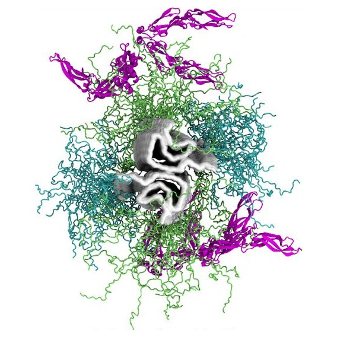
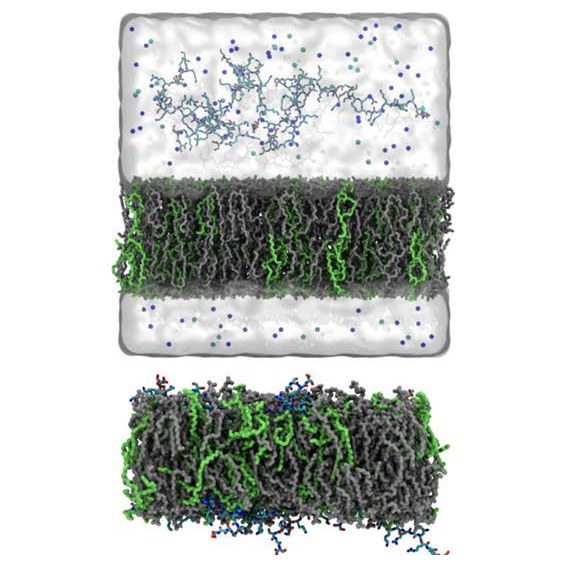
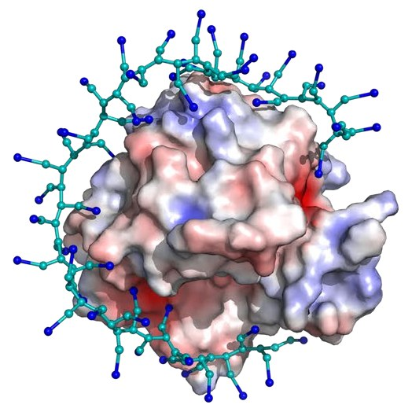
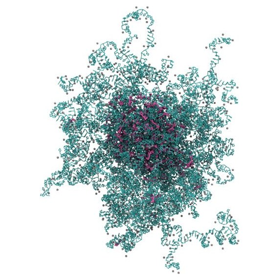
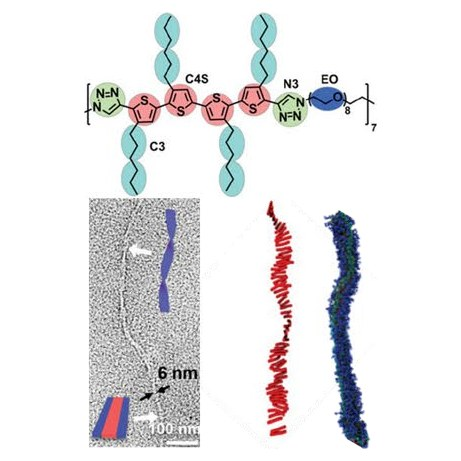
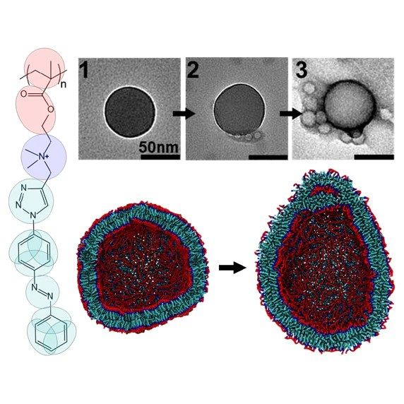

Simulation × Experiment
Working with experimental labs
Close collaboration with experimentalists runs through my work. Simulations provide molecular-level explanations of what experiments observe and make testable predictions, from biomolecular recognition and condensation in cells to the self-assembly of new materials.
Biomolecules




Polymers and materials



